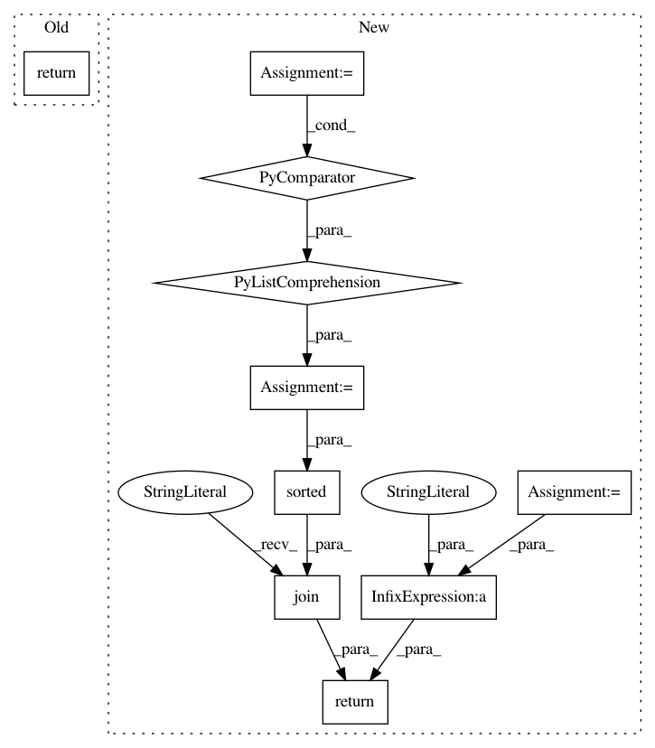

ebb357210205d3ad5fef77e8d33904625fb02a24,loudml/loudml/fingerprints.py,FingerprintsModel,show,#FingerprintsModel#Any#,684
Before Change
counts[x,y] += 1
if show_summary == True:
return "\n".join(["".join(["{:3}".format(cnt) for cnt in row]) for row in counts])
grid = []
for x in range(self.h):
for y in range(self.w):
After Change
locations[x,y] = l
if show_summary == True:
l = [ [x, y, locs] for (x, y), locs in locations.items() ]
detail = "\n".join("{},{}: {}".format(x, y, loc) for x, y, loc in sorted(l, key = operator.itemgetter(0, 1)))
grid = "\n".join(["".join(["{:3}".format(cnt) for cnt in row]) for row in counts])
return grid + "\n" + detail
return result
def generate_fake_prediction(self):
In pattern: SUPERPATTERN
Frequency: 3
Non-data size: 10
Instances
Project Name: regel/loudml
Commit Name: ebb357210205d3ad5fef77e8d33904625fb02a24
Time: 2019-02-10
Author: sebastien.regel@gmail.com
File Name: loudml/loudml/fingerprints.py
Class Name: FingerprintsModel
Method Name: show
Project Name: vatlab/SoS
Commit Name: 891ec4af721709367842540bcab909c12a85f3de
Time: 2017-01-03
Author: ben.bob@gmail.com
File Name: sos/utils.py
Class Name:
Method Name: stable_repr
Project Name: vatlab/SoS
Commit Name: 8978e5949e9726fd55948167b5aa6ec2eda0f38a
Time: 2017-01-03
Author: ben.bob@gmail.com
File Name: sos/utils.py
Class Name:
Method Name: stable_repr